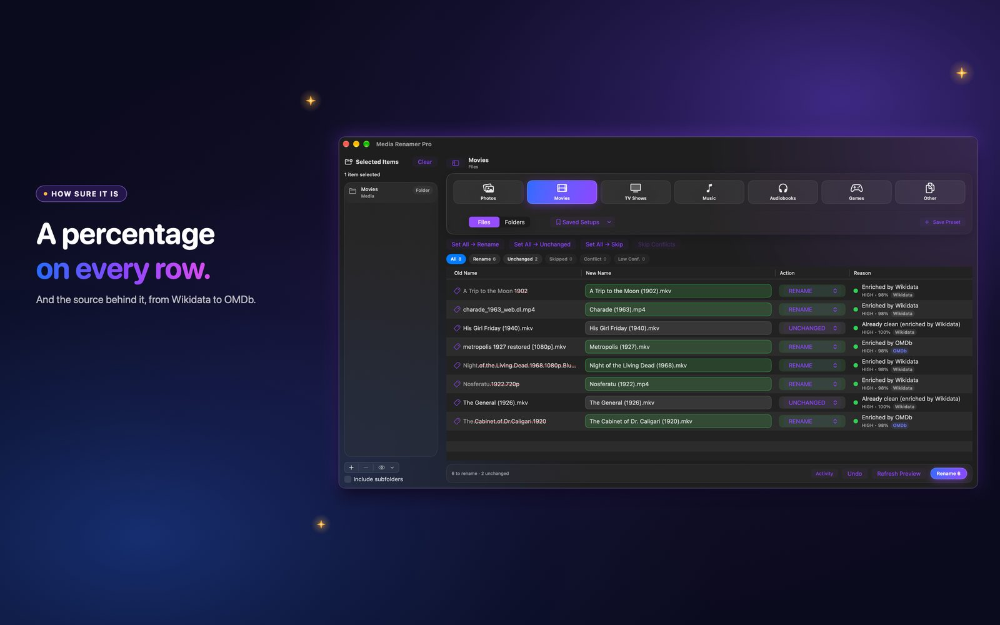

What the confidence percentage means in Media Renamer Pro
The number on each row is not decoration. It is worked out from what the app actually found, and you can hover to see why.
 By Buck Kettering· October 30, 2026· Applies to version 2.0
By Buck Kettering· October 30, 2026· Applies to version 2.0
Where to look
Each row in the preview shows a level, high or medium, a percentage, and which source answered, for example TVmaze or TMDb. Hover over it to see the reason in plain words.

What goes into it
Earlier versions gave almost every row a fixed number depending on the situation. In 2.0 the percentage comes from evidence the app compares for each file:
- How closely the title it found matches the title in your file.
- Whether the title matches exactly.
- Whether the year agrees, within one year.
- How many candidates it had to choose from.
- For TV, whether the episode title was found.
- For music and audiobooks, whether the author or artist agrees with the tags.
What the levels mean
- High: the evidence lines up. These are the rows you can skim.
- Medium: something is missing or ambiguous. Read these rows.
- Low: not enough to go on. Treat it as a question, not an answer.
A pick the app had to guess from many results never shows as high, however the name looks. Rows with no change stay at 100, and rows where the tags clearly disagree with the name are held low on purpose.
What to do with a medium or low row
- Hover and read the reason.
- If the match is wrong, fix it.
- If the match is right but the file is unusual, keep it, or skip the row.
It is a guide, not a promise. The preview and Undo are still the real safety net.